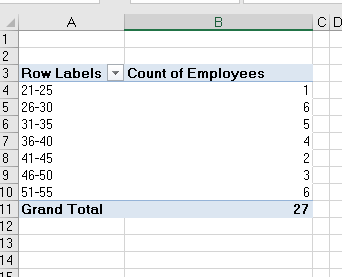
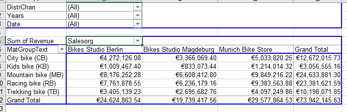
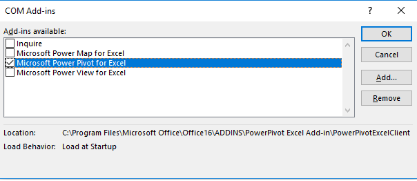
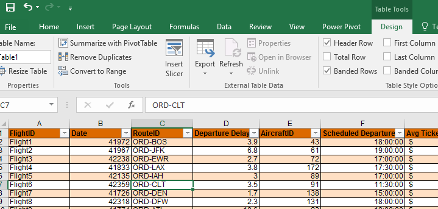
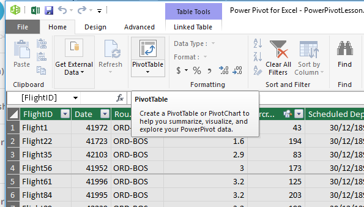
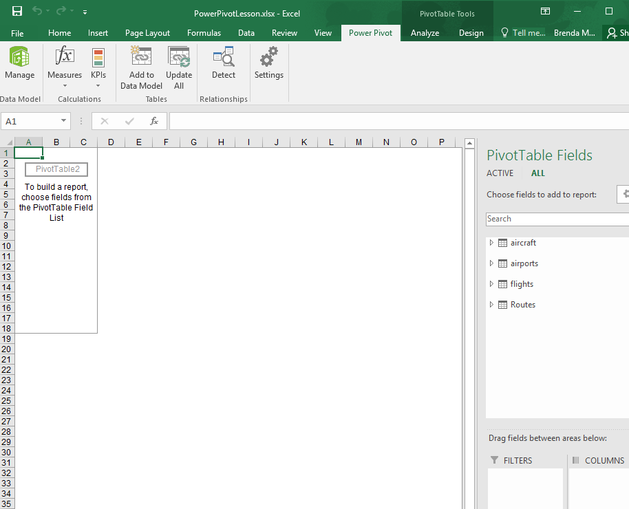

Objectives
Excel provides powerful tools for distilling a complex data set into meaningful information: Pivot Tables and PowerPivot Tables
This lab was created using material from Data Visualisation with Advanced Excel by PwC available on www.coursera.org
PivotTables
PivotTables allow you to create custom summaries and charts of key information in the data. To apply pivottables you need a data set with column labels in the first row.
The data set Accounting Professionals provides the results of a survey of 27 employees in a tax division of a Fortune 100 company.
Select any cell in the data set and choose Insert PivotTable from the Insert tab and follow the steps of the wizard.
Excel creates a new worksheet with a pivotTable as shown below:

You should first decide what types of tables you wish to create. For example in the accounting data set, suppose you want to count the average number of years of service for males and females with and without a graduate degree. If you drag the variable Gender from the field list to the row labels area, the variable graduate degree? into the column labels area and the variable years of service into the values area, then you have created the PivotTable.

However, the sum of years is probably not what you would want.
In the Analyze tab for Pivot Table Tools in the menu bar, click on the Active Field group and choose Field Settings. You will be able to change the summarisation method in the PivotTable in the dialog. Selecting the Average results in the PivotTable shown below. We see that the average number of years of service is not much different for holders of graduate degrees, but that females have much fewer years of service than males.

The beauty of pivotTables is that if you wish to change the analysis, you can simply uncheck the boxes in the field list or drag the variable names to different field areas. You may easily add multiple variables in the fields to create different views of the data.
Create PivotTables to find the average number of years of undergraduate study for each age group with and whithout a CPA and the number of employees in each age group with and without a CPA in the Excel file Accounting Professionals.
Create a PivotTable showing the count of the number of employees by age group.

PivotTables also provide an easy method of constructing cross-tabulations for categorical data. Extend the one above, drag the field Graduate Degree? into the column label box in the field list. This PivotTable is a cross-tabulation of the number of employees in each age group who do or do not posses a graduate degree.
Open the file Bicycle Pivot. Create a PivotTable to determine the total revenue for material groups in each sales organisaiton.
Experiment with adding filters to the pivotTable, such as Distribution Channel.
You can also drill down into the data by right clicking on the category Mountain bike, choose Expand/Collapse and then Expand, then choose the detail you want to see, in this case Material. Remove the drill down by removing the Material field in the field list for rows.
Try restricting to the first quarter of 2007. To do this we add the field Date to the rows section, and then right click on one of the dates displayed, choose Group, and add Quarters, and Years to the groups.Then move the Years and Date fields that appear in the rows section to the filter section. Then click on the dropdown box for Years and tick 2007, click on the dropdown box for Date and choose the first quarter.

PowerPivot
There are many ways to analyse and summarise data in Excel, one feature is called PowerPivot. It is similar to the PivotTable feature you covered in step 1. However, POwerPivot is able to run pivot tables by merging several big datasets and run pivot tables off the consolidated data.
To use PowerPivot you must be familiar with the Internal Data Model (IDM). IDM is the analytical engine that Excel uses behind the scenes to construct the PowerPivot. It is basically a database in which Excel organises information. Two features that are useful: first, it can establish relatinships between multiple databases. Second, it can hold unlimited number of rows and columns. You are only limited by a 2 gigabyte workbook and the memory available on the machine where Excel is running. (IDM is only available in Excel 2013 or newer)
To active PowerPivot we need to add it to our available tabs in Excel. Go to the File menu and choose options.

Excel options box opens, choose Add-ins from the menu on the left and then choose COM Add-ins from the drop down list Label Managed:

Click Go.
Check the box for Microsoft PowerPivot for Excel and click OK.

Now you should see the PowerPivot tab appear on the top ribbon in Excel.
![]./img/10.png)
Linking Data Tables
We will work on some Airline data for this step. Open the file Power Pivot Lesson. There are four data tables in this workbook each containing different kindds of airline data.
The first is Flights, it contains information relating to flights out of Chicago, including:
- destination
- the ID of the aircraft
- the scheduled departure time
- pricing information
- date of the flight
The second is Routes, it provide insight into:
- the specific departure and arrival airports
- the distance
- list price
Note that all flights are coming out of ORD with is the airport code for O'Hare International Airport Chicago.
The third data table is the Aircraft tab, it provides specs for all aircraft in the fleet:
- type of aircraft,
- seat capacity
- fuel cost per seat per mile
The last data table is the Airports tab which provides:
- airport full name
- number of available gates
This lesson will address how to analyse this data, it is no simple task as the data is spread over several tabs. For example if the business asked you to analyse the types of aircraft that frequent certain routes and have delays, it would require you to combine data from the flights, aircraft and routes tabs. Instead of going back and forth between tabs we can use the relational data model and PowerPivot to analyse data across multiple tabs.
First we convert the flights data into a table format so that we can use it in our PowerPivot data model.
Click on the flights tab, select the entire dataset, navigate to the insert menu ribbon and choose Table from the options available. You will see a dialog box open to confirm the data range and confirm that the data has a row of headers. It is considered best practice to include headers when selecting a data set. This allows Excel to add informative field names in the data model and clarity to the user.

Click OK. The dataset is now formated in a default table style. You will notice when the table is active that another tab called Table Tools Design appears on the main ribbon and the name of the table is presented to you.

Now when we select any cell the design tab appears. We can change the name of the table as it is good practice to change it from the default. Let's call this set of data flights.

Repeat this step for the other three datsets.
Next we complete our data model in PowerPivot.
- Start with the flights table, click on a cell in the table
- Navigate to the PowerPivot tab and click on the Add to Data Model button
The PowerPivot table is then displayed in a separate window.
- repeat these steps for each table until all four are added.

Now that we have added all 4 of the tables to our data model, we need to form the required relationships between the tables to create our PowerPivot.
- Click on the tab called Pivot 1a. Next navigate to the PowerPivot tab, and select the Manage option. It may take a couple of seconds to load the data.
- Click on the Diagram View option
This enables us to see each of the tables we have saved within the data model. For each table we must identify the links to the other tables by dragging lines between the tables, in order to create relationships. In order for this linking to work the columns must have exactly the same name.
Route ID appears in the routes table and the flights table, this means it is a foreign key in the flights table and a primary key in the routes table.
- Click on the route ID in the flights table and drag it onto the route ID in the routes table.
This creates a link in the diagram showing that these fields are the same. aircraft ID also appears in two tables, create the link as before. Lastly link the two occurrences of airport ID.
Tip: always link from the foreign key side to the primary key side in a relationship.

All tables in the diagram are now connected, no single table stands on its own. Close the PowerPivot view.
PowerPivot to Visualise Data
For this exercise you are asked to look into the specific metrics with regard to flights and the aircraft that are being used. We are going to use the data model that we created in the last step.
If we want to answer the qustion: How many flights use the A319 aircraft? We know that flight and aircraft data are stored in two different tabs of data. However we have used the aircraft ID to link those data sets together.
Go to a new tab name it Exercise 2. We are going to place our pivot table in this new tab so it can expand as needed. - Select the first cell in A1. - Next navigate to the PowerPivot tab on the ribbon - Click Manage - Click Pivot Table

- It prompts you to confirm that you want a pivot table created in the existing worksheet.

- All four tables in our data model appear on the right hand side.
- To answer the question we must combine the aircraft and flight datasets. Exapand those two datasets.

- Now we can see flight ID and aircraft type. Drag these two fields into the values and rows fields respectively.
- Now we see the pivot table form.
- It shows a count of the flightIDs which is what we want to show since we are answering the question how many flights use the A319 aircraft.
Cell B2 shows us there were 3879 flights that used the A319 aircraft.
The second question we wish to answer is: What is the most common type of aircraft used across all flights? What is the answer?
The next question is : What is the maximum average ticket price for flights on the A320 aircraft?
You can create a new tab if you wish to answer this question or re-work your existing power pivot.
- We need the aircraft type (rows) and ticket price (values)
- By default the average ticket price is summed so we want to change this
- Click the dropdown arrow for Sum of Avg Ticket Price in the Values section, choose Value Field Setting.

- Choose Max from the list of options to summarise by.
PivotCharts
Another feature of PowerPivot is PivotCharts.
This allows you to visualise data across multiple data sources. In this particular case we are being asked to visualise the number of flights flown for each aircraft type.
- Open a new tab name it PivotChart
- Click in cell D12 and then click on PowerPivot, then the Manage button and then the arrow below PivotTable.
- Choose PivotChart and use the existing workbook.

- You can adjust the height and width of the chart.
- Next select the fields for the x and y axis.
- Aircraft type should be placed in the Axis section.
- FlightID should be placed in the Values section.
- You can change the title by double clicking the text (change it to Flight ID vs Aircraft Type).
- The filter in the bottom left corner of the chart can be used to filter to only two types of aircrafts.
Practice PowerPivot and PivotChart
- You will now create new PowerPivots to answer the following questions:
- How many flights are flown from O'Hare (ORD) to Los Angeles International Aiport (LAX)?
- Which route accounts for the lowest percentage of total revenue?
- What was the most popular month to fly to Fort Lauderdale (FLL)?
- Create a pivot chart to show the number of flights per month on the ORD-PHL route.
To answer the first question:
- Create a pivot table using PowerPivot on a new tab.
- We want to count the number of flights on a specific route, so count the flightID's. drag the flightid's field into the values section.
- The routes table only gives us flights leaving from Ohare so we can drag the airport id into the rows section. We can see in row 16 the number of flights to LAX is 699.
To answer the second question:
- Create a pivot table using PowerPivot on a new tab.
- We want to sum the total revenue so drag it into the values section.
- We need to look at revenue for each route so drag routeid into the rows section.
- The table shows us the sum of total revenue per route not the percentage of total revenue.
- right click on the pivot table and choose Show Values As, and choose Percentage of Grand Total.
- You an then also sor the table so that the lowest is shown at the top
- The answer is Salt Lake City (SLC)
Try to answer the third question yourself. (hint you will need to filter the table using routeid). Try to create the chart yourself.